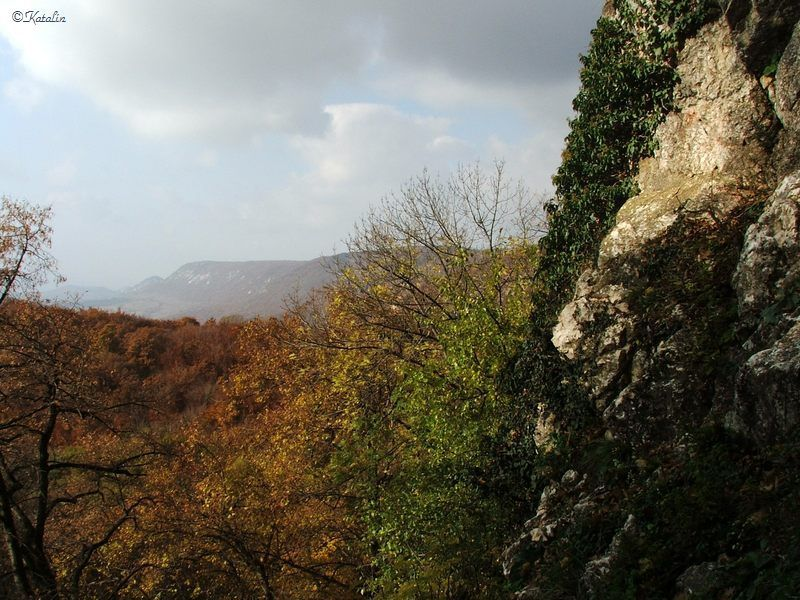

Klastrom-szirtek

A Fekete-kőtől tovább haladva a Pilis-nyergen át, a sárga jelzésen
haladva, mintegy 2 km. múlva érjük el a Klastrom-szirteket. Az út
végig lefelé lejt, csupán a szirtek előtt pár száz méterre vált
meredek emelkedőre. Érdemes felkapaszkodni, hiszen több pontról is
gyönyörű kilátás nyílik nyugat felé. A közeli községeken kívül szép
időben jól látszanak a Gerecse hegyei, a Duna, illetve Szlovákia
felé is messze elláthatunk. A lábunk alatt található
Klastrompusztáról rövidebb úton is felkapaszkodhatunk ide, közben
útba ejthetjük a Leány és Legény barlangot is. A Kétbükkfa-nyereghez
a piros jelzésen haladva, a Pilis-nyeregnél rátérve a zöld
keresztre, mintegy 3 km-es járással térhetünk vissza.
Plusz túra tipp:
Egy olyan látnivalókban gazdag túrát ajánlunk most nektek, amelyre ritkán akad példa: egy kirándulás alatt egyszerre két
barlangot, három kilátópontot és a Pálos rend 13. századi történelmi emlékhelyét kereshetjük fel. Ugyan a szint nem
elhanyagolható, ezért érdemes rá akár egy egész napot szánni, beleértve az energiautánpótlást is Klastrompusztán, a
büfében.
A Pálos rendet Boldog Özséb esztergomi kanonok alapította, amikor 1250-ben egyesítette a Patacs-hegyi és a pilisi
remetéket, akik az egyesítés előtt egyenként vagy kisebb csoportokban a domb- és hegyvidékeken, barlangok és források
közelében telepedtek le. Még ugyanekkor, 1250 táján a Szent Kereszt tiszteletére Klastrompusztán templomot, majd
kolostort emeltek. A rend pápai jóváhagyása után ez a kolostor lett a pálosok első központja. Hanyatlásuk 1526-ban, a
Mohácsi csatát követően kezdődött, amikor is a Budára vonuló törökök kifosztották, fölégették és elpusztították a
kolostorokat.
Nos, ennek a kornak az építészeti emlékeit fedezhetjük fel klastrompusztai látogatásunk alkalmával, ahol a Pálos rend
történetébe mélyebb betekintést is nyerhetünk. Az erdőbe továbbindulva a Csévi-szirtek alatt megtaláljuk a remeték
egy-egy bázis pontját, a Leány- és Legény-barlangot, majd a Klastrom-szirtről, a Kémény-szikláról jó pár méterrel
magasabbról fentről is megtekinthetjük a fák között megbújó apró települést, Klastrompusztát.
Továbbhaladva a Pilis-nyereg feletti kilátópontról megcsodálhatjuk Pilisszentlélek és Esztergom panorámáját, majd a
Borostás-hegy hosszan elnyúló gerincén végighaladva eljutunk a Kétágú-hegyig, ahonnan remek kilátás nyílik Kesztölcre, a
Palatinus-tóra és Dorogra egyaránt.
Ettől a ponttól visszafordulva szintén nagyszerű panoráma tárul elénk a Borostás-hegy alatti szőlőföldekre, ha jobbra
feltekintünk, akkor pedig a meredek hegyoldalból itt-ott kikandikáló fehér szirteket csodálhatjuk meg.
Igazán tartalmas és minden szempontból lenyűgöző ez a túra, amit meleg szívvel ajánlunk mindenkinek.